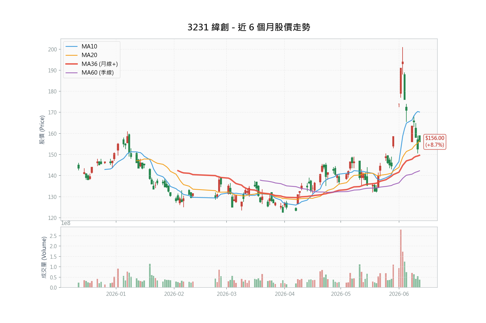

上檔空間
+30.1%
現價至中性目標 203 元
3231 Wistron 深度研究報告｜2026-06-14
報告維持「買進」評等，但操作轉為防守與分批佈局：GB 機櫃出貨上修、一般伺服器需求回溫、VR 與 CPO 網通接棒；近期籌碼轉弱（法人賣超、動能評分降至 1/5），風險集中在毛利率稀釋、buy-and-sell 利息費用與客戶集中。
中性目標價 203 元對應 30.1% 上檔；停損採基本面底 135 元（季線下緣），波段中性風報比 2.24 : 1。樂觀目標 240 元的可信度取決於 2027 年 CPO、AMD Helios、VR 三條成長線能見度。
成長動能明確，但投資重點不只看營收，還要確認毛利率與業外利息是否能被高毛利產品線抵消。

中性目標 203 元立足 2026 年 EPS；樂觀目標 240 元主要來自估值基準延伸到 2027 年，需搭配後續基本面驗證。
| 維度 | 進場 → 目標 | 進場 → 停損 | 空間 | 風險報酬比 | 評價 |
|---|---|---|---|---|---|
| 技術防守（中性） | 156.0 → 203.0 | 季線 142.28 | +30.1% / -8.8% | 3.43 : 1 | 僅在季線守住時成立 |
| 波段基本面（中性） | 156.0 → 203.0 | 基本面底 135.0 | +30.1% / -13.5% | 2.24 : 1 | 穩健 |
| 波段基本面（樂觀） | 156.0 → 240.0 | 基本面底 135.0 | +53.8% / -13.5% | 4.00 : 1 | 優良 |
營收高速擴張，EPS 也明顯上行；但毛利率由 FY23/FY24 的 8.0% 下滑至 FY26F 的 5.9%，需觀察 2H26 高毛利產品是否接棒。
| 年度 | 營業收入 (百萬) | 營業利益 (百萬) | 稅後純益 (百萬) | EPS | 毛利率 | ROE | 自由現金流 (百萬) |
|---|---|---|---|---|---|---|---|
| FY23 | 867,057 | 27,390 | 11,472 | 4.08 | 8.0% | 11.4% | 33,554 |
| FY24 | 1,049,256 | 38,979 | 17,446 | 6.11 | 8.0% | 14.7% | -14,344 |
| FY25 | 2,186,523 | 78,553 | 27,408 | 9.04 | 6.1% | 17.7% | -149,323 |
| FY26F | 3,461,938 | 126,677 | 45,665 | 14.52 | 5.9% | 17.1% | -17,568 |
| FY27F | 4,592,664 | 128,136 | 54,239 | 17.25 | 5.0% | 18.3% | 23,651 |
千張大戶比例單週由 61.68% 回吐至 60.64%（-1.04%），法人近五日累計賣超 48,685 張。融券餘額低，報告明確不以軋空描述。
這份報告的關鍵紀律是「營收高成長不能自動等於 EPS 高成長」。毛利率、利息支出與自由現金流是後續追蹤重點。
1Q26 毛利率降至 5.2%。GB 機櫃營收高但毛利較低，若 2Q26 未止跌，估值重估會受限。
風險：高buy-and-sell 模式推高流動負債，1Q26 業外淨支出達 -56.3 億元，須看逐季收斂。
風險：高獲利高度綁定 NVIDIA GB/VR roadmap；架構改變、多源化或價格戰都會壓縮利潤。
風險：高| 賣出觸發條件 | 原因 | 建議反應 |
|---|---|---|
| 連續兩季毛利率低於 5.0% | 表示高毛利產品無法抵消機櫃稀釋 | 減碼並重估 EPS |
| 單季業外淨支出超過 70 億 | 利息侵蝕開始吞噬 AI 獲利 | 降低持股權重 |
| GB 機櫃季出貨低於 3,500 櫃 | 跌破 1Q26 水準，出貨上修論點失效 | 取消樂觀情境 |
| 季度營收 YoY 跌破 +40% | 排除基期效應後的結構性走弱（單月 YoY 因 2025 高基期失真） | 減碼 |
| 有效收盤跌破基本面底 135.00 元 | 季線下緣失守，中期防線破壞 | 全數停損 |
因動能/籌碼評分降至 1/5，動能型追價已暫停。現階段以積極型（小倉建立）與穩健型（回檔分批）為主，停損統一採基本面底 135 元。
後續驗證集中在短期營收、中期毛利率與 3Q26 產品爬坡。